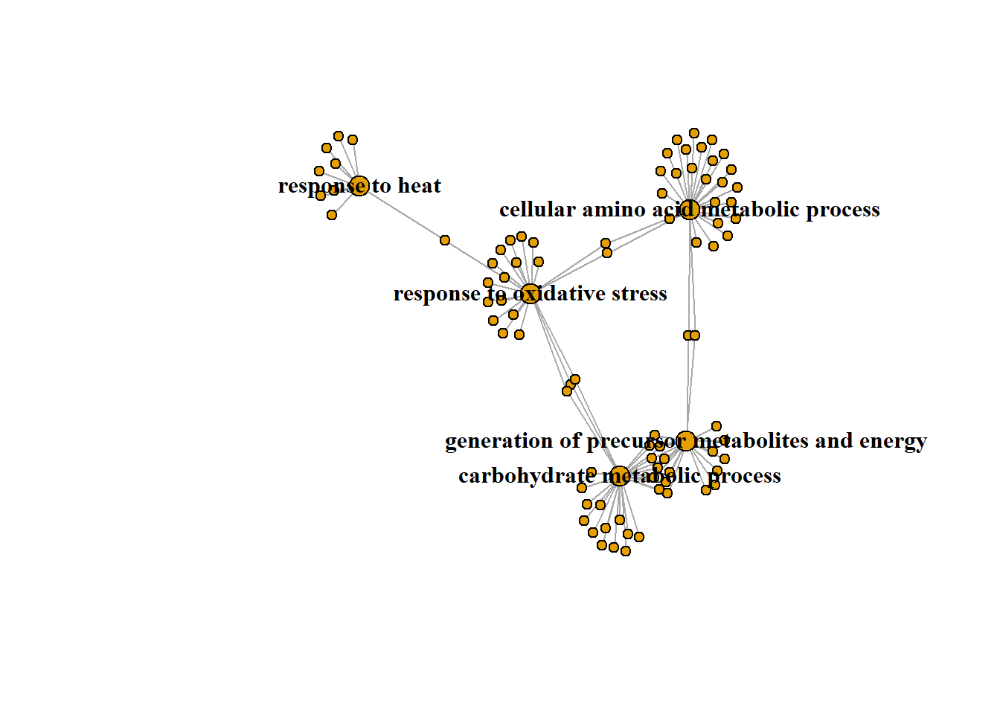
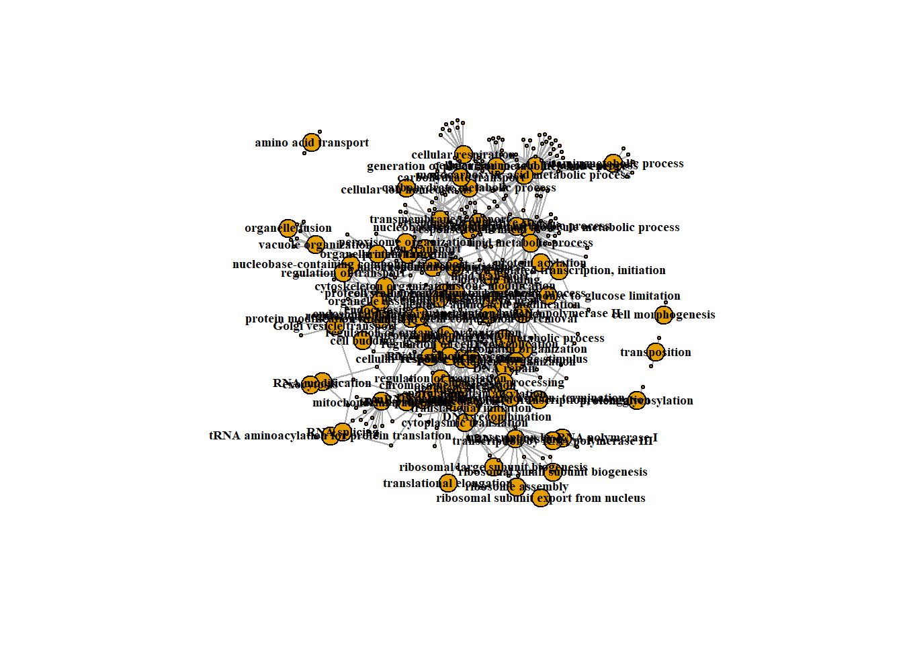
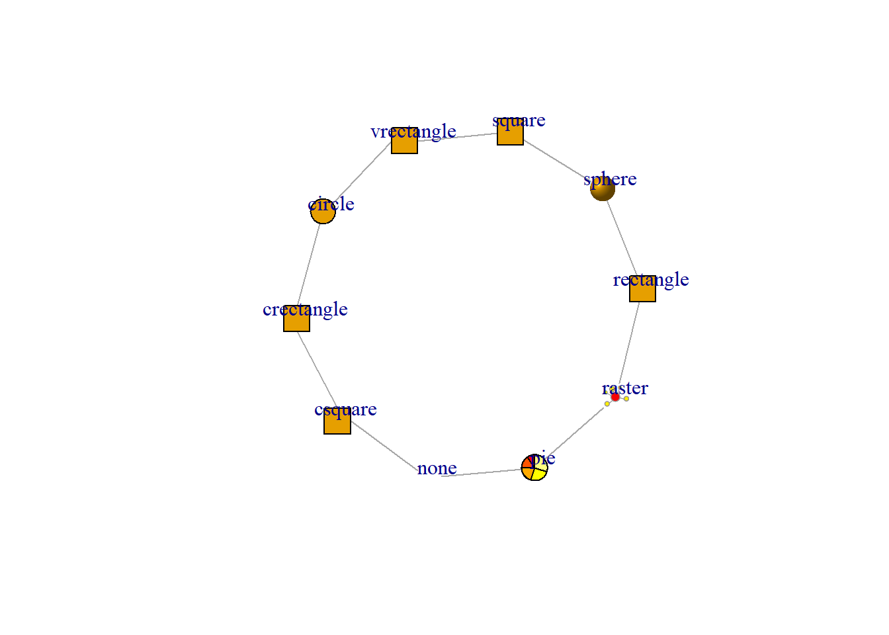
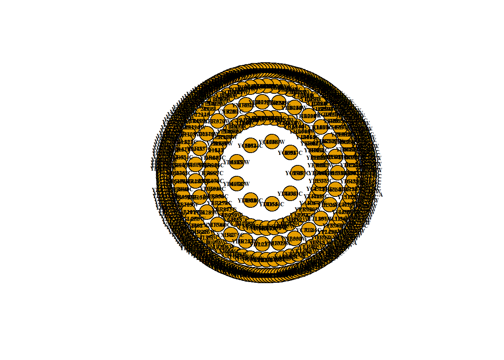
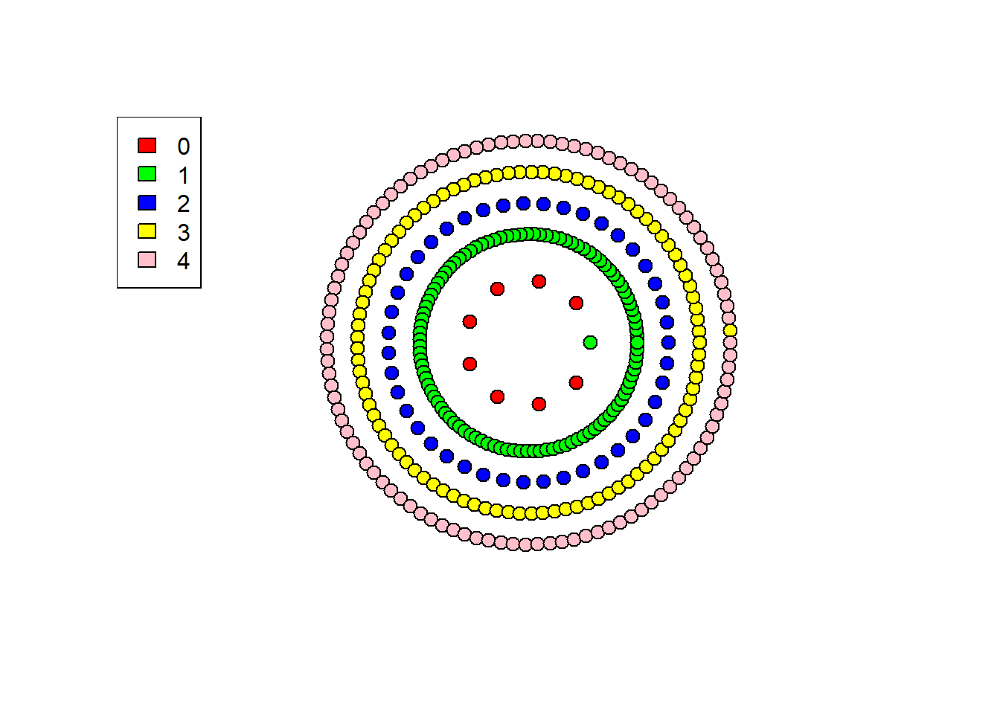

Code
# Load in our data
proteomic <- read.csv("trimmed_proteomic_Data.csv")The focus of my research is the study of Hsp90 molecular chaperone. Over the decades we come to realize this chaperone sits as a major hub of protein-protein interactions (Gopinath et al. 2014; Zhao et al. 2005; Rizzolo and Houry 2019) in which it regulates the folding, activity, and degradation of its clients.
The current study expands the preliminary proteomic analysis previously done in yeast by us(Hohrman et al. 2021), here we use quantitative proteomic analysis to compare extracts from yeast expressing wild-type yeast Hsp90 to nine different mutants. Our results demonstrate that the mutants elicit varied proteomic responses, even though the cells were harvested at temperatures that do not significantly affect growth. Overall, our results suggest:
It is possible to selectively inhibit Hsp90 function in vivo, and
Identifies cellular processes and/or likely clients that may be differentially affected by Hsc82 mutation.
Data source:
A significant hit in our study is a protein whose abundance had a |Log2 Fold Change| (LogFC) greater than 1.5, relative to wild-type.
# Load in our data
proteomic <- read.csv("trimmed_proteomic_Data.csv")Data Dictionary #1
Hsp90.Interactors <- read.csv("SGD_All_interactions_Hsp90_with_Refs_trimmed.csv", header = TRUE, stringsAsFactors = FALSE)Data Dictionary #2
GO.terms <- read.table(file = "GO Slim Mapper Results.txt", header = TRUE, sep = "\t", stringsAsFactors = FALSE)Data Dictionary #3
library(igraph)Since our objective is to construct a protein interaction network, intuitively our nodes will be our significant hits found in our study. However, we must also include our experimental variables, in this case single point mutations in the Hsp90 chaperone, this will help promote separation/clustering between nodes later when we apply our measurements from DIA-MS.
# Visualize 350 nodes corresponding to the significant hits in our data
nodes <- unique(c(proteomic$contrast, proteomic$Gene))
g <- make_empty_graph(directed = FALSE)
g <- add_vertices(g, length(nodes))
V(g)$name <- nodes
plot(g,
margin = -.4,
vertex.size = 4,
vertex.label.cex = .5,
xlim=c(-1.5, 1.5), ylim=c(-1.5,1.5)
)
In this circle of nodes we have our 9 Hsp90 mutants and 350 proteins that had a significant change in protein abundance in at least one mutant strain.
Now we must establish the relationship between these nodes. Starting with the relationship between our protein hits and experimental variables (Hsp90 mutants). These proteins were found to have a significant change in abundance when at least one mutant Hsp90 is expressed as the sole source of Hsp90.
edges <- data.frame(
from = proteomic$Gene,
to = proteomic$contrast,
LogFC = proteomic$logFC,
p = proteomic$P.Value
)
# Convert edge list to indices
edges$from <- match(edges$from, nodes)
edges$to <- match(edges$to, nodes)
# create a list of alternating values from 'from' and 'to' columns
edge_list <- c(rbind(edges$from, edges$to))
g <- add_edges(g, edges = edge_list)
# Specify edge length based on attribute: LogFC
edge_weights <- abs(edges$LogFC)
E(g)$weight <- edge_weights# Plot the network
plot(g)
Nice, we now have the results of our DIA-MS experiments for each mutant ‘condition’ visualized as a network. However, I think it is safe to say it is garbage and unintelligible as-is. Let’s make some conscious design choices to make this at least visually pleasing to the eye. Bonus points if it reveals something cool!
# Nodes
nodes <- unique(c(proteomic$contrast, proteomic$Gene))
g <- make_empty_graph(directed = FALSE)
g <- add_vertices(g, length(nodes))
# set all vertex labels to an empty string
V(g)$label <- ""
# manually assign labels to the 9 (mutant) nodes
V(g)$label[1:9] <- nodes[1:9]
# node colors
V(g)$color <- "white"
# Hide the mutant node shapes
V(g)$size <- 3
V(g)[1:9]$size <- 7
# Hide mutant nodes, but leave labels
V(g)$shape <- "circle"
V(g)$shape[1:9] <- "none"
# Edges
edges <- data.frame(
from = proteomic$Gene,
to = proteomic$contrast,
LogFC = proteomic$logFC,
p = proteomic$P.Value
)
# Convert edge list to indices
edges$from <- match(edges$from, nodes)
edges$to <- match(edges$to, nodes)
# create a list of alternating values from 'from' and 'to' columns
edge_list <- c(rbind(edges$from, edges$to))
g <- add_edges(g, edges = edge_list)
# Specify edge length based on attribute: LogFC
# "Undo" the Log (base: 2) so that larger LogFC values have more 'weight'
# add 10 to all values to help make the network physically smaller.
edge_weights <- abs(edges$LogFC)
E(g)$weight <- edge_weights
# c <- cluster_louvain(g, resolution = 1.25)
layout <- layout_with_fr(g)
# ## Try to resolve overlapping labels or labels too close.
# # Calculate the degree of each node
# deg <- degree(g)
#
# # Set the label distance and degree based on the node degree
# dist <- ifelse(deg <= 2, 0, .5) # For nodes with degree <= 2, set distance
# degree <- seq(0, 360, length.out = 4) # Set the label degree based on the node index
# degree <- degree + 90 # Shift the degrees so that labels are offset from the top of the node
# Plot the network
set.seed(420)
plot(g,
layout = layout,
margin = -.8, # allow the network to use up more of the margin
vertex.label.cex = .6,
vertex.label.font = 2, # Bold
vertex.label.color= "black",
edge_arrow_mode = 0,
# vertex.label.degree = degree,
# vertex.label.dist = dist,
xlim=c(-1.75, 1.75), ylim=c(-1.75, 1.75) # Increase the plot size to help accommodate the network
)
Design choices: We are more interested in results as a whole and not individual proteins (for now at least), node size was decreased and labels removed; To help distinguish between the 2 node classes/groups: Hsp90 mutations and Proteins, the mutant node shapes were removed, leaving behind the label.
# Assign each gene to a group based on interaction type with Hsp90.
proteomic$Interaction <- "Unknown"
proteomic$Interaction[proteomic$Systemic.name %in% Hsp90.Interactors$Systemic.Name[Hsp90.Interactors$TYPE=="Genetic"]] <- "Genetic"
proteomic$Interaction[proteomic$Systemic.name %in% Hsp90.Interactors$Systemic.Name[Hsp90.Interactors$TYPE=="Physical"]] <- "Physical"
proteomic$Interaction[proteomic$Systemic.name %in% Hsp90.Interactors$Systemic.Name[Hsp90.Interactors$TYPE=="Physical"] &
proteomic$Systemic.name %in% Hsp90.Interactors$Systemic.Name[Hsp90.Interactors$TYPE=="Genetic"]] <- "Mixed"
# Assign color to each group
library(viridis)Loading required package: viridisLiteWarning: package 'viridisLite' was built under R version 4.1.3# Define color palette
colors <- viridis(n = 4, option = "D", alpha = 1, begin = 0, end = 1, direction = -1)
# Add color column to dataframe
proteomic$Int.color <- colors[match(proteomic$Interaction, unique(proteomic$Interaction))]
# Nodes
nodes <- unique(c(proteomic$contrast, proteomic$Gene))
g <- make_empty_graph(directed = FALSE)
g <- add_vertices(g, length(nodes))
V(g)$label <- nodes
# Edges
edges <- data.frame(
from = proteomic$Gene,
to = proteomic$contrast,
LogFC = proteomic$logFC,
p = proteomic$P.Value
)
# Convert edge list to indices
edges$from <- match(edges$from, nodes)
edges$to <- match(edges$to, nodes)
# create a list of alternating values from 'from' and 'to' columns
edge_list <- c(rbind(edges$from, edges$to))
g <- add_edges(g, edges = edge_list)
# node colors
V(g)$color <- "white"
V(g)$color <- proteomic$Int.color[match(V(g)$label, proteomic$Gene)]
# set all vertex labels to an empty string
V(g)$label <- ""
# manually assign labels to the 9 (mutant) nodes
V(g)$label[1:9] <- nodes[1:9]
# Hide the mutant node shapes
V(g)$size <- 3
V(g)[1:9]$size <- 7
# Hide mutant nodes, but leave labels
V(g)$shape <- "circle"
V(g)$shape[1:9] <- "none"
# Specify edge length based on attribute: LogFC
# "Undo" the Log (base: 2) so that larger LogFC values have more 'weight'
# add 10 to all values to help make the network physically smaller.
edge_weights <- abs(edges$LogFC)
E(g)$weight <- edge_weights
layout <- layout_with_fr(g)
# Plot the network
set.seed(420)
plot(g,
layout = layout,
margin = -.8, # allow the network to use up more of the margin
vertex.label.cex = .6,
vertex.label.font = 2, # Bold
vertex.label.color= "black",
edge_arrow_mode = 0,
vertex.color = V(g)$color,
xlim=c(-1.75, 1.75), ylim=c(-1.75, 1.75) # Increase the plot size to help accommodate the network
)
V(g)$label <- nodes
mutants <- matrix(c(cos(seq(0, 2*pi, length.out = 10)),
sin(seq(0, 2*pi, length.out = 10))), ncol = 2)*4
# Add nodes to outer rings based on conditions
V(g)$color <- proteomic$Int.color[match(V(g)$label, proteomic$Gene)]
genetic <- length(unique(proteomic$Gene[proteomic$Interaction == "Genetic"]))+ 1
mixed <- length(unique(proteomic$Gene[proteomic$Interaction == "Mixed"]))+ 1
physical <- length(unique(proteomic$Gene[proteomic$Interaction == "Physical"]))+ 1
unknown <- length(unique(proteomic$Gene[proteomic$Interaction == "Unknown"]))+ 1
Node_coords <- data.frame(nodes.index = 1:359,
gene = c(unique(proteomic$contrast),unique(proteomic$Gene[proteomic$Interaction == "Genetic"]),
unique(proteomic$Gene[proteomic$Interaction == "Mixed"]),
unique(proteomic$Gene[proteomic$Interaction == "Physical"]),
unique(proteomic$Gene[proteomic$Interaction == "Unknown"])
))
# Assign the nodes in the outer rings to different positions based on their group
genetic.c <- matrix(c(cos(seq(0, 2*pi, length.out = genetic)),
sin(seq(0, 2*pi, length.out = genetic))),
ncol = 2)*7
mixed.c <- matrix(c(cos(seq(0, 2*pi, length.out = mixed)),
sin(seq(0, 2*pi, length.out = mixed))),
ncol = 2)*9
physical.c <- matrix(c(cos(seq(0, 2*pi, length.out = physical)),
sin(seq(0, 2*pi, length.out = physical))),
ncol = 2)*11
Unknown.c <- matrix(c(cos(seq(0, 2*pi, length.out = unknown)),
sin(seq(0, 2*pi, length.out = unknown))),
ncol = 2)*13
DF <- rbind(mutants[-nrow(mutants),], genetic.c[-nrow(genetic.c),], mixed.c[-nrow(mixed.c),], physical.c[-nrow(physical.c),], Unknown.c[-nrow(Unknown.c),])
Node_coords <- cbind(Node_coords,DF)
layout <- as.matrix(Node_coords[,3:4][match(V(g)$label, Node_coords$gene),])
# set all vertex labels to an empty string
V(g)$label <- ""
# manually assign labels to the 9 (mutant) nodes
V(g)$label[1:9] <- nodes[1:9]
###
colors2 <- viridis(n = 9, option = "D", alpha = .25, begin = 0, end = 1, direction = -1)
E(g)$color <- c(rep(colors2[1], degree(g,1)),
rep(colors2[2], degree(g,2)),
rep(colors2[3], degree(g,3)),
rep(colors2[4], degree(g,4)),
rep(colors2[5], degree(g,5)),
rep(colors2[6], degree(g,6)),
rep(colors2[7], degree(g,7)),
rep(colors2[8], degree(g,8)),
rep(colors2[9], degree(g,9))
)
set.seed(420)
plot(g,
layout = layout,
margin = -.8, # allow the network to use up more of the margin
vertex.label.cex = .6,
vertex.label.font = 2, # Bold
vertex.label.color= "black",
edge_arrow_mode = 0,
vertex.color = V(g)$color,
edge.alpha = .1,
xlim=c(-1.75, 1.75), ylim=c(-1.75, 1.75) # Increase the plot size to help accommodate the network
)
legend("topleft", legend=unique(proteomic$Interaction), fill=unique(V(g)$color)[2:5], title = "Hsp90 Interaction \nType")
# Calculate GO process enrichment
GO.terms$CLUSTER_FREQUENCY <- as.numeric(sub("%", "", GO.terms$CLUSTER_FREQUENCY))/100
GO.terms$GENOME_FREQUENCY <- as.numeric(sub("%", "", GO.terms$GENOME_FREQUENCY))/100
GO.terms$Enrichment <- GO.terms$CLUSTER_FREQUENCY/GO.terms$GENOME_FREQUENCY
# Take top 5 enriched processes that have at least 5 proteins annotated to a cellular process.
GO.terms5 <- GO.terms[GO.terms$NUM_LIST_ANNOTATIONS >= 5,]
GO.terms5 <- GO.terms5[order(GO.terms5$Enrichment, decreasing = T),]
GO.terms5 <- GO.terms5[1:5, c(1,2,9,10)]
library(tidyr)
GO.terms5.split <- separate_rows(GO.terms5, ANNOTATED_GENES, sep = ", ")
proteomic$GO.process <- "other"
proteomic$GO.process[proteomic$Gene %in% GO.terms5.split$ANNOTATED_GENES] <- GO.terms5.split$TERM[GO.terms5.split$ANNOTATED_GENES %in% proteomic$Gene]
g <- graph_from_data_frame(proteomic)
set.seed(420)
plot(g,
layout = layout,
margin = -.8, # allow the network to use up more of the margin
vertex.label.cex = .5,
vertex.label.font = 2, # Bold
vertex.label.color= "black",
edge_arrow_mode = 0,
xlim=c(-1.75, 1.75), ylim=c(-1.75, 1.75) # Increase the plot size to help accommodate the network
)
library(igraph)
# Create empty graph with 359 nodes
g <- make_empty_graph(359)
# Set up nodes 1-9 in a ring in the center
layout <- matrix(c(cos(seq(0, 2*pi, length.out = 10)),
sin(seq(0, 2*pi, length.out = 10))), ncol = 2)*4
# Add nodes to outer rings based on conditions
outer_1 <- 10:114
outer_2 <- 115:159
outer_3 <- 160:254
outer_4 <- 255:359
# V(g)$groups <- rep(0, vcount(g))
V(g)$group <- c(rep(0, 9),rep(1,105), rep(2, 45,), rep(3,95), rep(4, 105))
# Assign the nodes in the outer rings to different positions based on their group
Oring1 <- matrix(c(cos(seq(0, 2*pi, length.out = 104)),
sin(seq(0, 2*pi, length.out = 104))), ncol = 2)*7
Oring2 <- matrix(c(cos(seq(0, 2*pi, length.out = 44)),
sin(seq(0, 2*pi, length.out = 44))), ncol = 2)*9
Oring3 <- matrix(c(cos(seq(0, 2*pi, length.out = 94)),
sin(seq(0, 2*pi, length.out = 94))), ncol = 2)*11
Oring4 <- matrix(c(cos(seq(0, 2*pi, length.out = 104)),
sin(seq(0, 2*pi, length.out = 104))), ncol = 2)*13
# combine coordinates
layout <- rbind(layout, Oring1,
Oring2, Oring3, Oring4
)
# Set the node colors and sizes based on their group
V(g)$color <- c(rep("red", 9), rep("green", 105), rep("blue", 45),
rep("yellow", 95), rep("pink", 105))
V(g)$size <- 7
# # Edges
# edges <- data.frame(
# from = proteomic$Gene,
# to = proteomic$contrast,
# LogFC = proteomic$logFC,
# p = proteomic$P.Value
#
# )
#
# # Convert edge list to indices
# nodes <- unique(c(proteomic$contrast, proteomic$Gene))
# edges$from <- match(edges$from, nodes)
# edges$to <- match(edges$to, nodes)
#
# # create a list of alternating values from 'from' and 'to' columns
# edge_list <- c(rbind(edges$from, edges$to))
#
# g <- add_edges(g, edges = edge_list)
# Plot the graph with the custom layout
plot(g, layout = layout, vertex.color = V(g)$color, vertex.size = V(g)$size, vertex.label = "", edge.arrow.mode= 0, edge.color = V(g)$color)Warning in layout[, 1] + label.dist * cos(-label.degree) * (vertex.size + :
longer object length is not a multiple of shorter object lengthWarning in layout[, 2] + label.dist * sin(-label.degree) * (vertex.size + :
longer object length is not a multiple of shorter object lengthlegend("topleft", legend=unique(V(g)$group), fill=unique(V(g)$color))
# create a simple graph
g <- make_empty_graph(10)
# create a vector to hold group membership
V(g)$groups <- rep(0, vcount(g))
# assign group membership to specific nodes
V(g)$groups[c(1,2,3)] <- 1
V(g)$groups[c(4,5,6)] <- 2
V(g)$groups[c(7,8,9,10)] <- 3